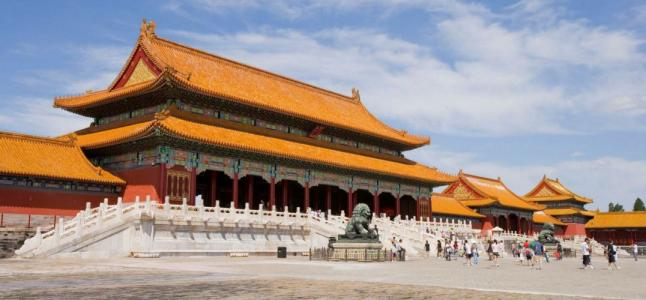
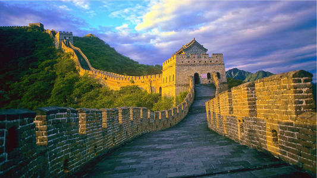
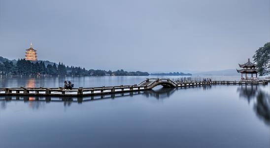
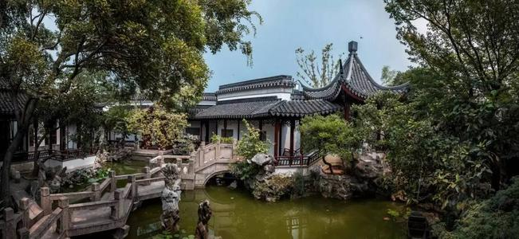
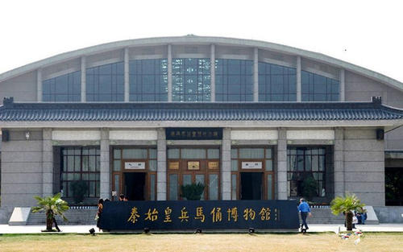
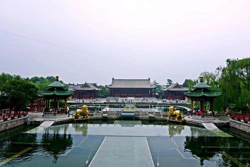

大美中国十日游 |
|
|  | Day01-Day02 北京故宫是中国明清两代的 皇家宫殿，旧称紫禁城，位于北京中轴线的中心。北京故宫以三大殿为中心，占地面积72万平方米， 建筑面积约15万平方米，有大小宫殿七十多座，房屋九千余间。北京故宫是世界上现存规模最大、 保存最为完整的木质结构古建筑之一，是国家AAAAA级旅游景区， 1961年被列为第一批全国重点文物保护单位； 1987年被列为世界文化遗产。 |
| Day03-Day04 长城（The Great Wall） 又称万里长城，是中国古代的军事防御工事，是一道高大、坚固而且连绵不断的长垣，用以限隔敌骑的行动。 长城不是一道单纯孤立的城墙，而是以城墙为主体，同大量的城、障、亭、标相结合的防御体系。 长城资源主要分布在河北、北京、天津、山西、陕西、甘肃、内蒙古、黑龙江、吉林、辽宁、山东、河南、青海、 宁夏、新疆等15个省区市。 |
 |
|  | Day05-Day06 西湖位于浙江省杭州市西湖区 龙井路1号，杭州市区西部，景区总面积49平方千米，汇水面积为21.22平方千米，湖面面积为6.38平方千米。 西湖有100多处公园景点，有“西湖十景”、“新西湖十景”、“三评西湖十景”之说，有60多处国家、省、 市级重点文物保护单位和20多座博物馆，有断桥、雷峰塔、钱王祠、净慈寺、苏小小墓等景点。 |
| Day07-Day08 苏州古典园林宅园合一， 可赏，可游，可居。这种建筑形态的形成，是在人口密集和缺乏自然风光的城市中，人类依恋自然、 追求与自然和谐相处、美化和完善自身居住环境的一种创造。苏州古典园林所蕴涵的中华哲学、历史、 人文习俗是江南人文历史传统、地方风俗的一种象征和浓缩，展现了中国文化的精华，在世界造园史上具有独特 的历史地位和重大的艺术价值。以拙政园、留园为代表的苏州古典园林被誉为“咫尺之内再造乾坤”， 是中华园林文化的翘楚和骄傲。 |
 |
|  | Day09 兵马俑即秦始皇兵马俑， 亦简称秦兵马俑或秦俑，第一批全国重点文物保护单位，第一批中国世界遗产，位于今陕西省西安市临潼区秦始 皇陵以东1.5千米处的兵马俑坑内。兵马俑被誉为“世界第八大奇迹“，先后有200多位外国元首和政府首脑参观 访问，成为中国古代辉煌文明的一张金字名片，被誉为世界十大古墓稀世珍宝之一。 |
| Day10 唐华清宫是唐代封建帝王游幸的 别宫。后也称“华清池”，位于陕西省西安市临潼区。包括原骊山国家森林公园，与颐和园、圆明园、承德避暑 山庄并称为中国四大皇家园林。华清宫背山面渭，倚骊峰山势而筑，规模宏大，建筑壮丽，楼台馆殿，遍布骊山 上下。初名“汤泉宫”，后改名温泉宫。唐玄宗更华清宫，因在骊山，又叫骊山宫，亦称骊宫、绣岭宫。 |
 |